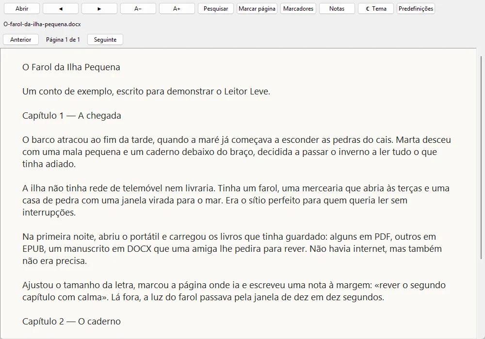
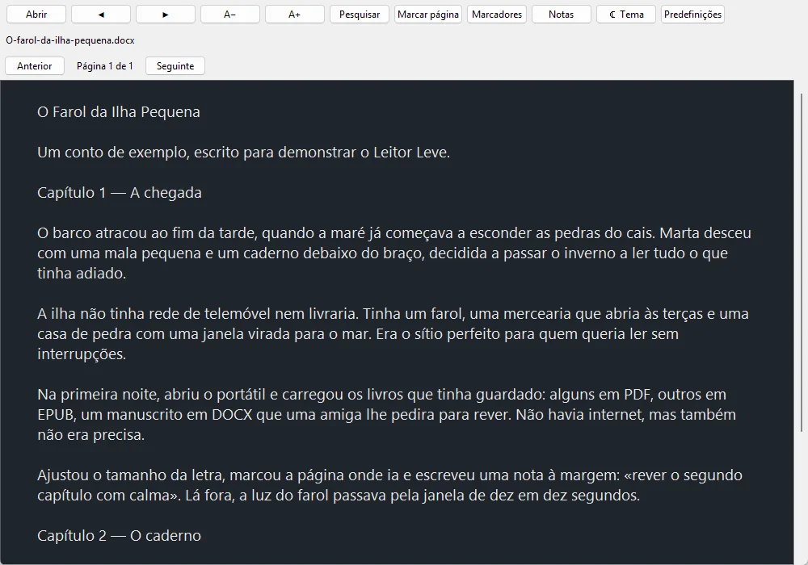

Offline reading
Open documents stored on the device without needing an internet connection.
DOCUMENT READER · PROTOTYPE
A simple offline reader.
Leitor Leve explores a lightweight way to read PDF, DOCX and EPUB files on Windows and Android.
Open documents stored on the device without needing an internet connection.
Explore navigation, search, notes and bookmarks as the prototype evolves.
DOCX and EPUB presentation is simplified, and the Android build still needs compatibility work.
Screenshots
The Windows version, showing a short sample story written for this page.


Available for Windows and Android. DOCX and EPUB formatting may not be fully preserved; DRM-protected books are not supported. The Android preview targets an older version of Android and may display a compatibility warning.
Windows: extract the ZIP and open LeitorLeve.exe. Android: download and install the APK.